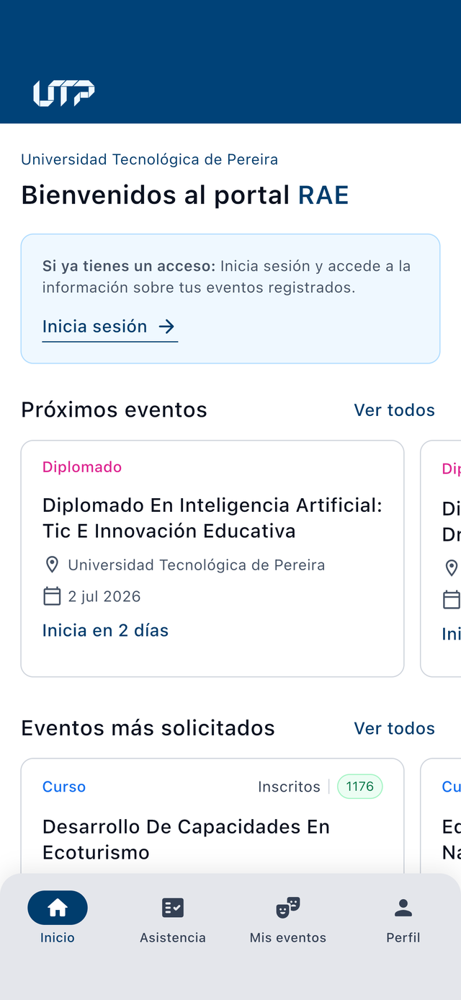
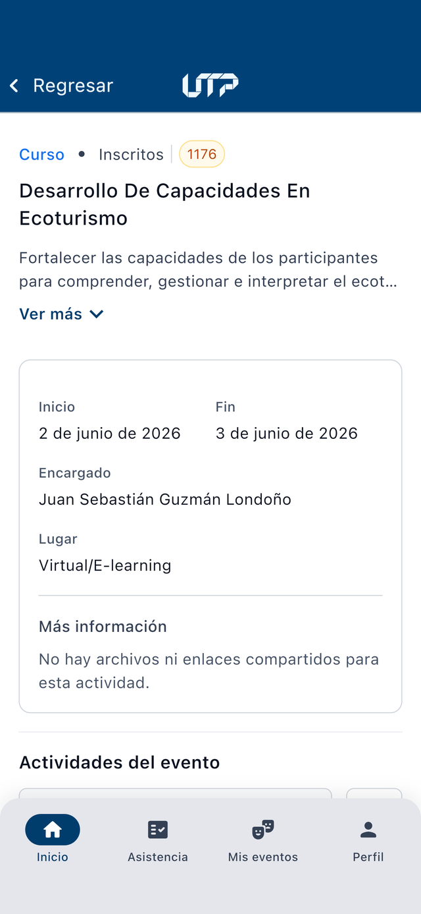
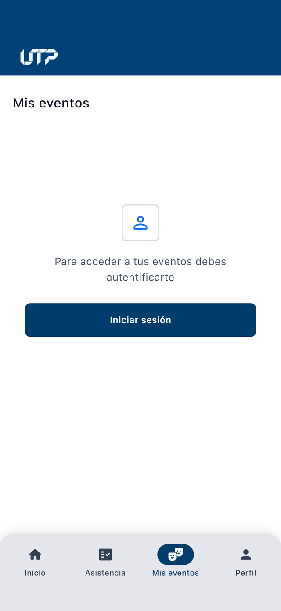
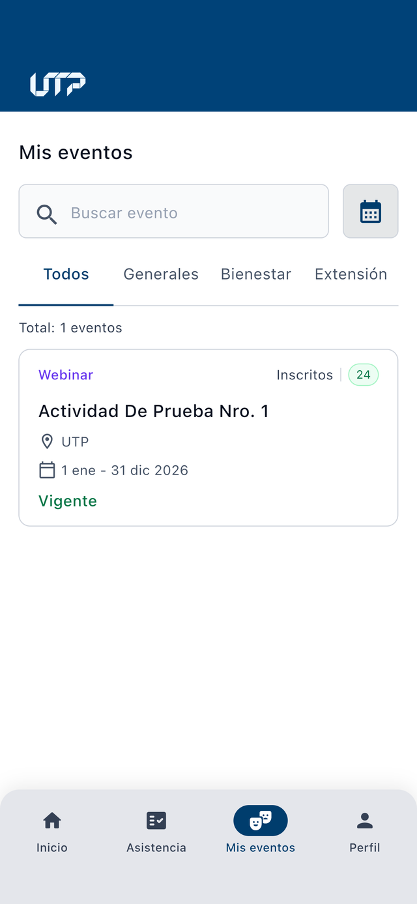
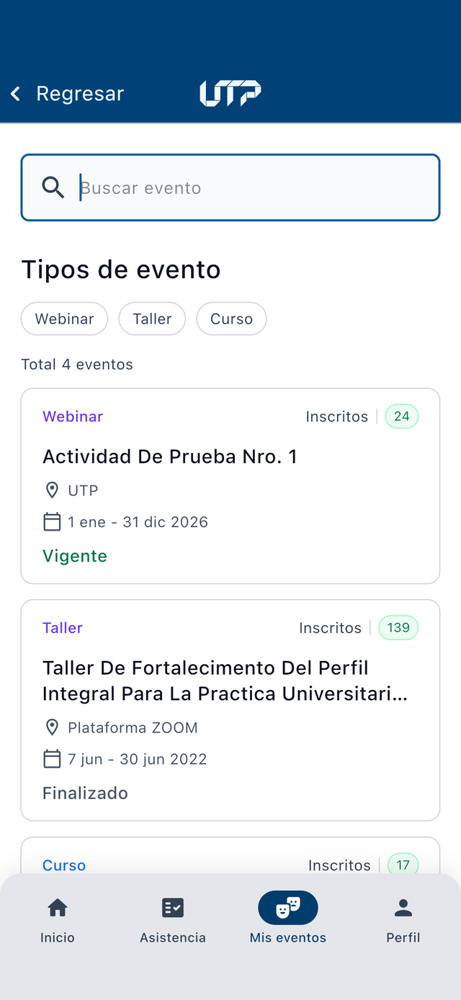
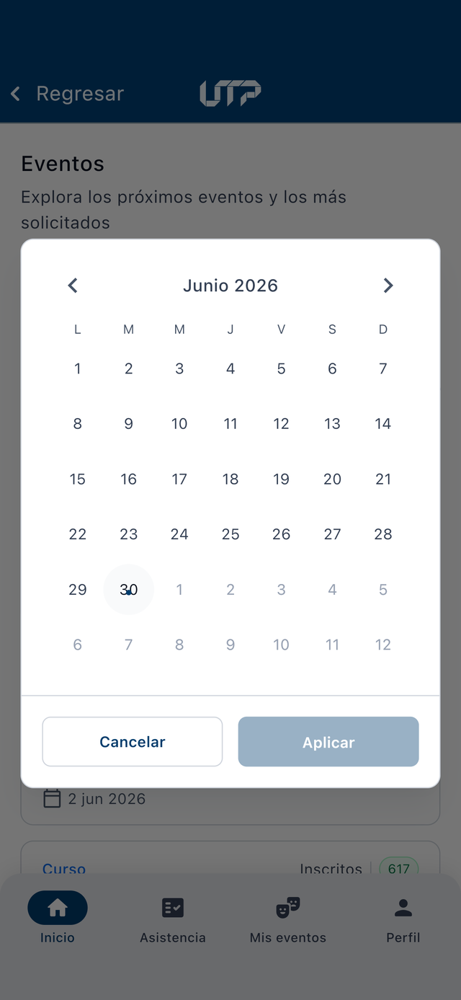
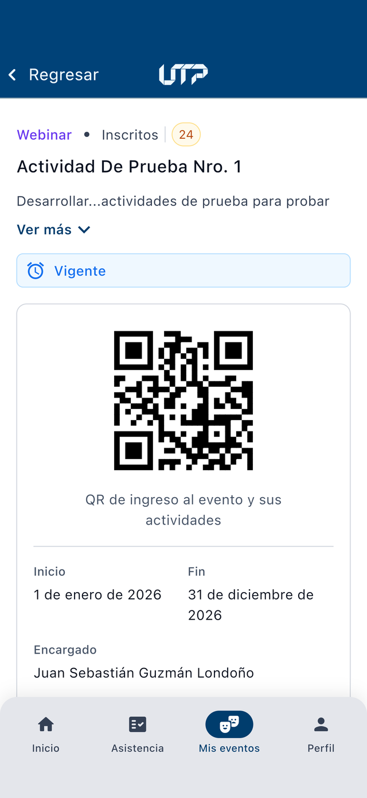
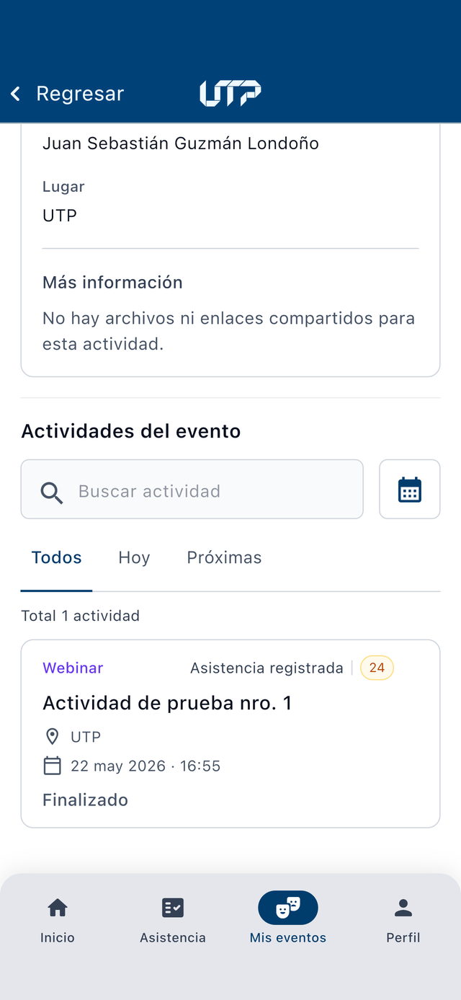

RAE UTP · Para participantes
Manual de Usuario
Consulta los eventos en los que estás inscrito y presenta tu código QR de ingreso.
Alcance del aplicativo
Como participante, el aplicativo RAE te permite consultar los eventos y actividades en los que ya estás inscrito y acceder a tu código QR personal de ingreso, el que presentas para que te registren la asistencia. Todo desde tu teléfono, sin papeles y disponible en cualquier momento.
Qué puedes hacer
- Ver los eventos en los que estás inscrito.
- Explorar los eventos públicos de la Universidad.
- Consultar el detalle de un evento y sus actividades.
- Obtener y presentar tu código QR de ingreso.
- Revisar tu perfil y tu historial de eventos.
Qué NO incluye este manual
- Tomar asistencia de otras personas.
- Escanear QR o documentos de asistentes.
- Gestionar inscritos o anular asistencias.
- Esas funciones están en el Manual del Coordinador.
Objetivos del aplicativo
Objetivo general
Facilitar al participante la consulta de los eventos en los que ya está inscrito y el acceso a su código QR de ingreso desde un dispositivo móvil, manteniendo su información centralizada y disponible en tiempo real.
Objetivos específicos
Descarga la aplicación
Escanea el código con la cámara de tu teléfono para descargar la app, o toca el enlace.


Glosario
Palabras que aparecen en este manual, explicadas en lenguaje sencillo.
- Evento
- Es el contenedor principal: agrupa varias actividades bajo un mismo nombre (un congreso, un diplomado, una semana cultural).
- Actividad
- Cada parte que compone un evento (una charla, una clase, un taller). A cada actividad se le toma la asistencia por separado.
- Inscripción
- El registro previo en un evento; es quedar en la lista de asistentes.
- Código QR de ingreso
- Una imagen cuadrada de puntos, propia tuya. El Coordinador la escanea para registrar tu asistencia, igual que el código de un boleto.
- Asistencia
- El registro que confirma que estuviste presente en una actividad.
- Vigente / Finalizado
- El estado de un evento: en curso/por venir (vigente) o ya terminado (finalizado).
- Términos y condiciones
- La autorización que das para que la Universidad use tus datos personales conforme a la ley.
Autenticación: “cómo ingresar”
- Abre la aplicación RAE en tu dispositivo móvil.
- Ingresa tu usuario y contraseña institucionales de la UTP (los mismos del portal).
- Marca la casilla “He leído y acepto los términos y condiciones”. Puedes tocar el enlace para leer el texto completo.
- Toca el botón “Ingresar”.


Inicio
La pestaña Inicio es la primera pantalla al abrir la app. Reúne, en un solo lugar, los eventos más relevantes para ti. Funciona con o sin sesión iniciada: sin sesión muestra los eventos públicos; al iniciar sesión añade tus eventos personales.
- Mis eventos más recientes — tus eventos inscritos (solo con sesión iniciada).
- Próximos eventos — eventos públicos abiertos a la comunidad.
- Eventos más solicitados — los de mayor demanda.
En cada bloque, el enlace “Ver todos” abre el listado completo, donde puedes buscar, alternar entre Próximos y Más solicitados y filtrar por fechas.




Funciones del Participante
A. Ver y filtrar mis eventos
En la pestaña Mis eventos se muestran los eventos en los que estás inscrito. Puedes buscar por nombre, filtrar por tipo (Generales, Bienestar, Extensión) o por rango de fechas. Si aún no has iniciado sesión, la pestaña te invitará a autenticarte.




B. Detalle del evento y mi código QR
Al tocar un evento verás su información (tipo, fechas, encargado, lugar) y tu código QR personal de ingreso. Este es el código que debes presentar para que te registren la asistencia. Al desplazarte hacia abajo encontrarás las actividades del evento, que puedes filtrar por Todos · Hoy · Próximas.


Perfil e historial
En la pestaña Perfil verás tus datos (nombre, documento, correo, celular) y el conteo de eventos inscritos y asistidos. Desde aquí también puedes activar el modo oscuro, abrir tu Historial de eventos, consultar los términos y condiciones y cerrar sesión.


Historial de eventos
Desde Perfil → Historial de eventos consultas todos los eventos en los que has participado: vigentes y finalizados. Puedes buscar, filtrar por estado (Todos · Activos · Completados) y por rango de fechas.


Preguntas frecuentes
¿Con qué usuario y contraseña ingreso?
¿Dónde encuentro mi código QR de ingreso?
No veo ningún evento en “Mis eventos”.
No tengo mi QR a la mano. ¿Cómo registran mi asistencia?
¿Para qué sirve el Historial de eventos?
¿Necesito internet?
Tomo asistencia en algunos eventos. ¿Dónde está esa guía?
¡Muchas gracias!
Esperamos que esta guía te haya sido útil. ¿Tomas asistencia? Revisa el Manual del Coordinador.